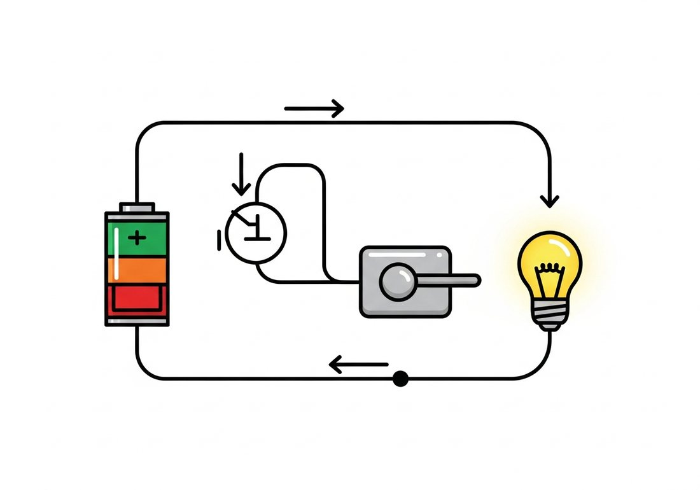
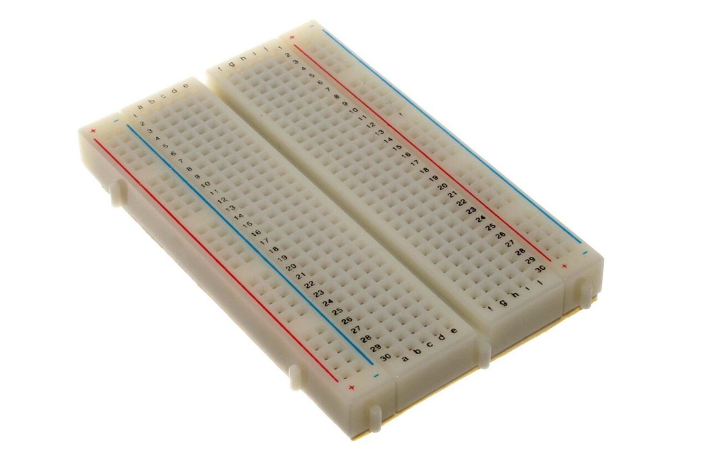
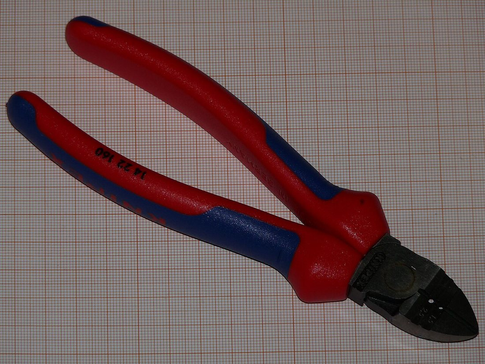
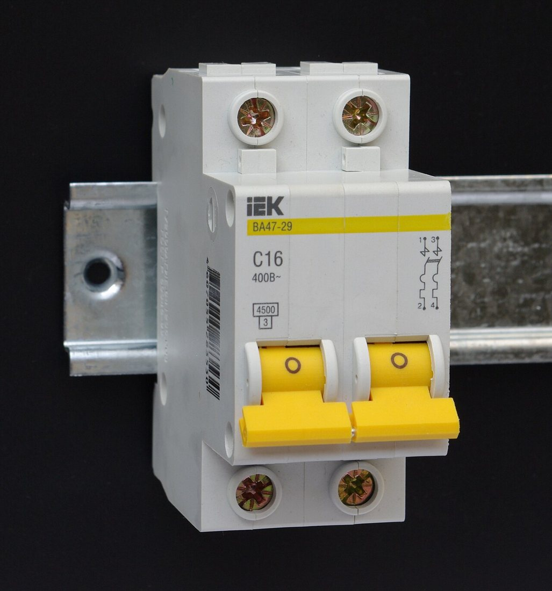
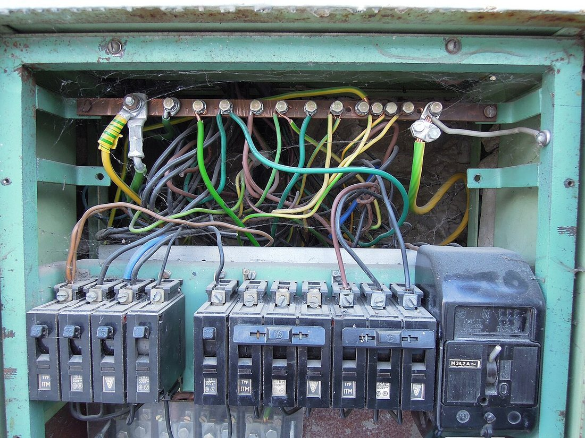

Көркем еңбек (ұлдар) · 4-бөлім · Машина және электротехника Art & Craft (Boys) · Section 4 · Machines & Electrics Художественный труд (мальчики) · Раздел 4 · Машины и электротехника
⚡ Электрмонтаж: қарапайым тізбек, қауіпсіздік
⚡ Wiring: A Simple Circuit and Safety
⚡ Электромонтаж: простая цепь, безопасность
Қорек көзі, өткізгіш, ажыратқыш пен шам — тұйық тізбекке қалай қосылады және мұны қалай қауіпсіз жасау керек. How a power source, conductor, switch and lamp join into a closed loop — and how to do it safely. Как источник, провод, выключатель и лампа соединяются в замкнутую цепь — и как сделать это безопасно.
Электр тізбегі дегеніміз не? What Is an Electric Circuit? Что такое электрическая цепь?
Электр тізбегі — ток жүретін тұйық жол. Ток ағуы үшін жол үзіліссіз болуы керек: қорек көзінің бір полюсінен шығып, өткізгіш, тұтынушы және ажыратқыш арқылы өтіп, екінші полюске қайта оралуы тиіс. Жол кез келген жерден үзілсе — ток тоқтайды, шам сөнеді. An electric circuit is a closed path along which current flows. For current to move, the path must be unbroken: it leaves one terminal of the power source, passes through the conductor, the load and the switch, and returns to the other terminal. Break the path anywhere and the current stops — the lamp goes out. Электрическая цепь — это замкнутый путь, по которому течёт ток. Чтобы ток шёл, путь должен быть непрерывным: он выходит из одного полюса источника, проходит через провод, потребитель и выключатель и возвращается к другому полюсу. Разорви путь в любом месте — ток прекратится, лампа погаснет.
Ең қарапайым тізбекте төрт бөлік бар: қорек көзі (батарея), өткізгіш (сым), ажыратқыш (кілт) және тұтынушы (шам). Дәл осы тізбек — қоңырау, шам, ойыншық немесе үй сымдары сияқты кез келген электр құрылғысының негізі. The simplest circuit has four parts: a power source (battery), a conductor (wire), a switch (key) and a load (lamp). This very circuit is the foundation of any electrical device — a doorbell, a lamp, a toy or the wiring of a house. В простейшей цепи четыре части: источник питания (батарея), проводник (провод), выключатель (ключ) и потребитель (лампа). Именно эта цепь — основа любого электрического устройства: звонка, лампы, игрушки или домашней проводки.

тұйық тізбек: ток көрсеткі бойынша жүреді 🔍a closed loop: current flows along the arrows 🔍замкнутый контур: ток идёт по стрелкам 🔍
Тізбектің төрт бөлігі The Four Parts of a Circuit Четыре части цепи
Әрқайсысының өз қызметі бар — біреуі болмаса тізбек жұмыс істемейді. Each has its own job — without any one of them the circuit will not work. У каждой свой смысл — без любой из них цепь не работает.
Қорек көзіPower sourceИсточник питания
Батарея немесе аккумулятор кернеу береді — ол токты тізбек бойымен жүргізеді. «+» және «−» полюстері бар.A battery or accumulator gives a voltage that drives the current around the circuit. It has a «+» and a «−» terminal.Батарея или аккумулятор создаёт напряжение, которое гонит ток по цепи. У неё есть полюс «+» и «−».
ӨткізгішConductorПроводник
Мыс сым ток жақсы өткізеді, ал оның түрлі-түсті оқшаулауы (изоляция) токты ұстап, қолды қорғайды.A copper wire conducts current well, while its coloured insulation holds the current in and protects your hand.Медный провод хорошо проводит ток, а его цветная изоляция удерживает ток и защищает руку.
АжыратқышSwitchВыключатель
Кілт тізбекті қажет кезде үзеді немесе қосады. Ажыратылғанда ток жоқ, қосылғанда — тізбек тұйықталады.The key breaks or completes the circuit on demand. Open — no current; closed — the loop is complete.Ключ по желанию размыкает или замыкает цепь. Разомкнут — тока нет; замкнут — цепь замкнута.
ТұтынушыLoadПотребитель
Шам, қозғалтқыш не қоңырау электр энергиясын жарыққа, қозғалысқа немесе дыбысқа айналдырады.A lamp, motor or bell turns electrical energy into light, motion or sound.Лампа, мотор или звонок превращают электрическую энергию в свет, движение или звук.
Қарапайым тізбекті қалай құрастыру керек How to Assemble a Simple Circuit Как собрать простую цепь
Тек төмен кернеулі батареямен (4,5 В) жұмыс істе — желі тогы (220 В) қауіпті! Work only with a low-voltage battery (4.5 V) — mains current (220 V) is dangerous! Работай только с низковольтной батарейкой (4,5 В) — сетевой ток (220 В) опасен!
Сызбаны оқы.Read the diagram.Прочитай схему. Тізбекте не қайда тұратынын алдын ала белгіле: батарея, ажыратқыш, шам.Decide in advance what goes where: the battery, the switch and the lamp.Заранее определи, что где стоит: батарея, выключатель, лампа.
Сымды тазала.Strip the wire.Зачисти провод. Сым ұшын арнайы стриппермен ~1 см тазала — жалаңаш мыс жалтырап тұруы керек.Strip about 1 cm of insulation from the wire ends with a stripper — the bare copper should be shiny.Сними около 1 см изоляции с концов провода стриппером — голая медь должна блестеть.
Қорек көзіне жалға.Connect the source.Подключи источник. Бір сымды батареяның «+» полюсіне, екіншісін «−» полюсіне берік бекіт.Fasten one wire firmly to the «+» terminal of the battery and the other to the «−».Надёжно закрепи один провод на полюсе «+» батареи, другой — на «−».
Ажыратқышты қос.Add the switch.Включи выключатель. Бір сымды ажыратқыш арқылы өткіз — ол тізбекті ашып-жабатын болады.Run one wire through the switch — it will open and close the loop.Проведи один провод через выключатель — он будет размыкать и замыкать цепь.
Шамды жалға.Connect the lamp.Подключи лампу. Шам патронының екі түйіспесіне сымдарды бекітіп, тізбекті тұйықта.Attach the wires to the two contacts of the lamp holder and close the loop.Закрепи провода на двух контактах патрона лампы и замкни цепь.
Тексер.Test it.Проверь. Ажыратқышты қос: шам жанса — тізбек дұрыс. Жанбаса, барлық түйіспені тексер.Close the switch: if the lamp lights, the circuit is correct. If not, check every connection.Замкни выключатель: загорелась лампа — цепь верна. Если нет — проверь все соединения.

💡 Қысқа тұйықталуShort circuitКороткое замыкание
«+» мен «−» полюсін шам арқылы өтпей, тікелей сыммен жалғама! Бұл — қысқа тұйықталу: сым қызып, батарея бұзылып, өрт шығуы мүмкін.Never join «+» and «−» directly with a wire, bypassing the lamp! That is a short circuit: the wire heats up, the battery is ruined and a fire can start.Никогда не соединяй «+» и «−» проводом напрямую, минуя лампу! Это короткое замыкание: провод раскаляется, батарея портится, возможен пожар.
Құрал-сайман мен қорғаныс Tools & Protection Инструменты и защита
Электрик құралдары мен тізбекті асқын токтан қорғайтын автоматтар. 🔍 Үлкейту үшін суретті бас. An electrician's tools and the breakers that protect a circuit from overcurrent. 🔍 Tap a photo to enlarge. Инструменты электрика и автоматы, защищающие цепь от перегрузки. 🔍 Нажми на фото, чтобы увеличить.



⚠️ Электр қауіпсіздігінің ережелері ⚠️ Rules of Electrical Safety ⚠️ Правила электробезопасности
Электр тогы көрінбейді, бірақ қауіпті. Осы ережелер өмірді сақтайды. Electric current is invisible but dangerous. These rules save lives. Электрический ток невидим, но опасен. Эти правила спасают жизнь.
| Опасность | Почему опасно | Что делать |
|---|---|---|
| Сеть 220 В | Может убить даже при коротком касании. | Опыты — только с батарейкой 4,5 В. Розетку не трогай. |
| Мокрые руки | Вода проводит ток — поражение усиливается. | Работай только сухими руками и в сухом месте. |
| Голый провод | Оголённая жила бьёт током и искрит. | Изоляцию снимай только на концах; повреждённый провод не используй. |
| Перегрузка | Слишком большой ток греет провод — пожар. | Ставь автомат/предохранитель; не включай много приборов в одну розетку. |
| Цепь под током | Ток идёт — касаться контактов опасно. | Перед сборкой и ремонтом разомкни цепь (выключи). |
| Қауіп | Неге қауіпті | Не істеу керек |
|---|---|---|
| 220 В желі | Қысқа тигеннің өзінде өлтіруі мүмкін. | Тәжірибе тек 4,5 В батареямен. Розеткаға тиме. |
| Дымқыл қол | Су ток өткізеді — зақым күшейеді. | Тек құрғақ қолмен, құрғақ жерде жұмыс істе. |
| Жалаңаш сым | Ашық өзек ток соғады әрі ұшқындайды. | Оқшаулауды тек ұшынан ал; зақымдалған сымды қолданба. |
| Асқын жүктеме | Шектен тыс ток сымды қыздырады — өрт. | Автомат/сақтандырғыш қой; бір розеткаға көп құрылғы қоспа. |
| Токтағы тізбек | Ток жүргенде түйіспеге тию қауіпті. | Құрастыру мен жөндеу алдында тізбекті ажырат (сөндір). |
| Hazard | Why it is dangerous | What to do |
|---|---|---|
| 230 V mains | Can kill even with a brief touch. | Experiment only with a 4.5 V battery. Do not touch sockets. |
| Wet hands | Water conducts current — the shock is stronger. | Work only with dry hands in a dry place. |
| Bare wire | An exposed conductor shocks and sparks. | Strip insulation only at the ends; never use a damaged wire. |
| Overload | Too much current heats the wire — a fire. | Fit a breaker/fuse; don't plug many devices into one socket. |
| Live circuit | While current flows, touching contacts is dangerous. | Open (switch off) the circuit before building or repairing it. |
🚫 Ешқашан жасамаNever do thisНикогда не делай
Розеткаға металл затты тықпа; зақымдалған сымды ұстама; токтағы тізбекті жалаң қолмен тексерме; «+» мен «−» тікелей жалғама; су жанында электрмен жұмыс істеме.Don't poke metal objects into a socket; don't touch a damaged wire; don't probe a live circuit with bare hands; don't join «+» and «−» directly; don't work with electricity near water.Не суй металлические предметы в розетку; не трогай повреждённый провод; не проверяй цепь под током голыми руками; не соединяй «+» и «−» напрямую; не работай с электричеством у воды.
✅ Әрқашан жасаAlways do thisВсегда делай
Жұмыс алдында тізбекті ажырат; төмен кернеумен үйрен; сымды берік әрі таза жалға; оқшауланған құрал қолдан; күмәнді жағдайда ересектен сұра.Switch the circuit off before working; learn with low voltage; make firm, clean connections; use insulated tools; if unsure, ask an adult.Перед работой обесточь цепь; учись на низком напряжении; делай прочные, чистые соединения; используй изолированный инструмент; сомневаешься — спроси взрослого.
💬 Қорытынды 💬 In a nutshell 💬 Главное
Кез келген электр құрылғысы бір қарапайым ойдан басталады: токтың тұйық жолы. Қорек көзі, өткізгіш, ажыратқыш пен тұтынушы бір тізбекке қосылса — шам жанады. Бірақ электрмен жұмыс істегенде бірінші орында әрқашан қауіпсіздік тұр: төмен кернеу, құрғақ қол, оқшауланған құрал және ажыратылған тізбек. Қарапайым тізбекті түсінсең — үлкен электротехниканың есігі ашылады. Every electrical device begins from one simple idea: a closed path for the current. Join a power source, a conductor, a switch and a load into one circuit, and the lamp lights up. But when working with electricity, safety always comes first: low voltage, dry hands, insulated tools and a circuit that is switched off. Understand the simple circuit, and the door to all of electrical engineering opens. Любое электрическое устройство начинается с одной простой идеи: замкнутый путь для тока. Соедини источник, проводник, выключатель и потребитель в одну цепь — и лампа загорится. Но при работе с электричеством на первом месте всегда безопасность: низкое напряжение, сухие руки, изолированный инструмент и обесточенная цепь. Поймёшь простую цепь — откроется дверь во всю электротехнику.